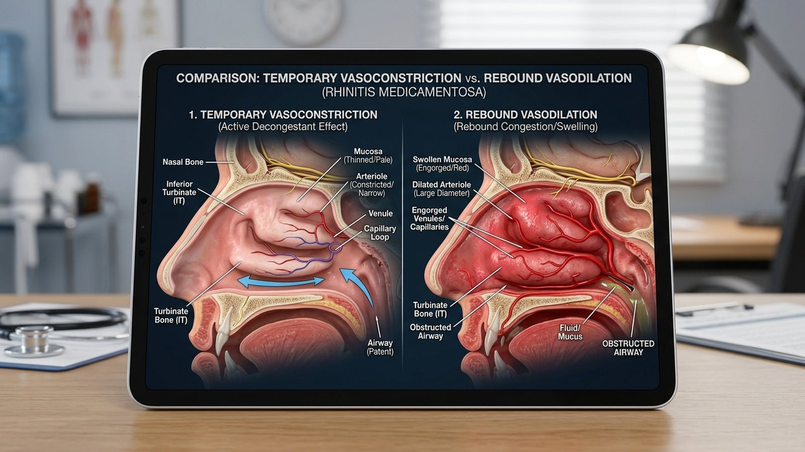
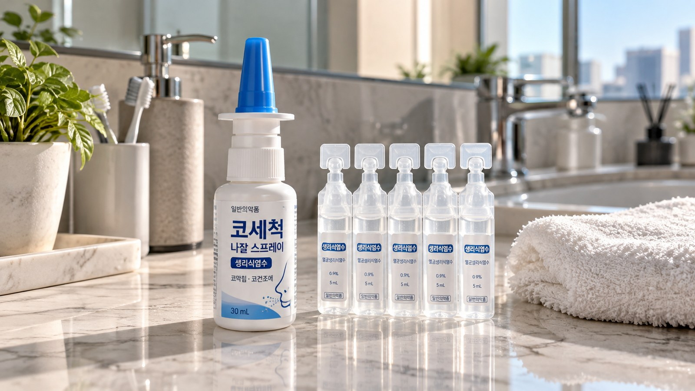
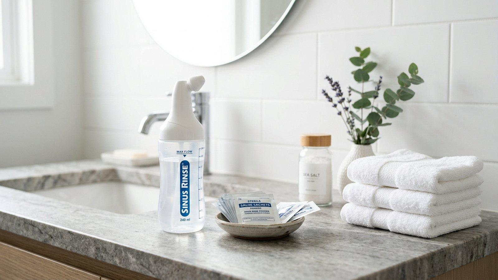

아침저녁 찬바람이 불기 시작하면서
코가 꽉 막혀 숨쉬기조차 힘든 날 많으시죠?
약국에서 코막힘 스프레이를 사서 칙칙 뿌렸더니
단 3초 만에 뻥 뚫려 "마법 같다"며 감탄하셨을 겁니다.
하지만 식품의약품안전처와 이비인후과학회는
이 스프레이를 연속 5일 이상 쓰지 말라고 강력히 경고합니다!
처음에는 뿌리자마자 시원하게 숨길이 열리지만
일주일 넘게 매일 뿌리면 오히려 코가 2배 더 붓거든요.
약 없이는 단 10분도 숨을 못 쉬는 이 악순환,
내 몸속 콧속 혈관이 보내는 치명적인 반동 경고입니다.
약국에서 처방전 없이 쉽게 사는 코 스프레이는
대부분 옥시메타졸린 같은 '비충혈제거제' 성분입니다.
염증을 근본적으로 다스리는 약이 아니라
부어있는 혈관을 강제로 쥐어짜 쪼그라뜨리는 방식입니다.
혈관이 좁아지니 점막 부피가 줄어들어
숨길이 시원하게 열리는 것처럼 느껴질 뿐인데요.
약효가 6~8시간 뒤 떨어지는 순간
혈관이 이전보다 훨씬 더 크게 부풀어 오르는 '반동 작용'이 시작됩니다.

대한이비인후과학회의 학술 연구 발표를 살펴보면
스프레이를 매일 5~7일 이상 연속 분사할 때 문제가 터집니다.
콧속 혈관 수용체가 약물 자극에 무뎌지는 탈감작이 일어나
약효는 짧아지고 점막 비후는 굳어집니다.

이것이 바로 학계에서 말하는 '약물성 비염(반동성 비염)'인데요.
코가 막혀서 또 뿌리고, 뿌려서 더 막히는 악순환의 굴레에 갇히게 됩니다.
게다가 스프레이를 콧구멍 가운데(코뼈)를 향해 쏘면
얇은 비중격 점막에 손상이 생겨 잦은 코피나 천공이 생길 수 있습니다.
이미 스프레이 없이는 잠조차 못 드는 상태라면
양쪽 코를 한 번에 끊기보다 '한쪽 코 순차 중단법'이 정석입니다.
왼쪽 코에만 약을 뿌려 숨길을 열어두고
오른쪽 코는 약을 끊고 1~2주간 점막이 스스로 회복되길 기다립니다.
약 뿌릴 때도 고개를 살짝 숙이고
코 가운데가 아닌 '눈꼬리 바깥쪽 45도 각도'로 분사해야 안전합니다.
동시에 전문의 상담을 통해
혈액 흡수율이 낮아 안심할 수 있는 처방용 비강 스테로이드로 전환해 점막 염증을 가라앉힙니다.

약국 비염 스프레이는 급할 때 3~5일만 쓰는 '응급 구조대'입니다.
매일 의존하며 콧속을 혹사시키지 마시고
미온수 멸균 식염수 세척과 실내 습도 50% 관리로 지친 점막을 쉬게 해주세요.
여러분은 코가 막힐 때 약국 스프레이를 며칠 연속으로 뿌려보셨나요?
혹시 뿌려도 금방 다시 막히는 경험을 하셨다면 댓글로 편하게 나눠주세요 😊
#비염스프레이 #환절기비염 #비염스프레이주의점 #반동성비염 #약물성비염 #오트리빈 #비충혈제거제 #비염스프레이사용법 #비강스프레이 #비염코막힘 #비중격보호 #식염수코세척 #알레르기비염 #에디터혀니 #꿀단지